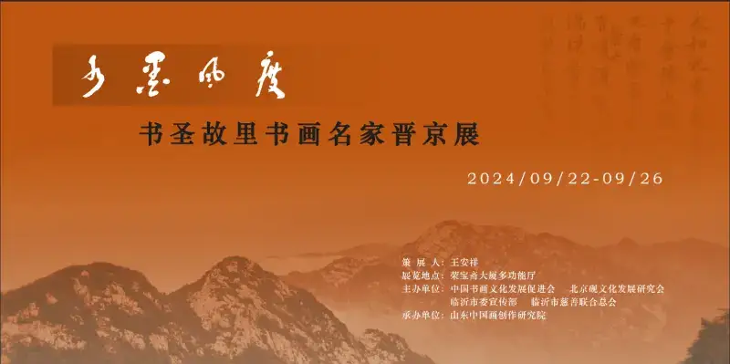
On September 22, the "Ink Grace" exhibition of famous calligraphy and painting masters from the hometown of the Sage of Calligraphy opened at Rongbaozhai Mansion in Beijing. It was jointly organized by the China Calligraphy and Painting Culture Development Association, the Beijing Inkstone Culture Development Research Society, the Publicity Department of the Linyi Municipal Party Committee, and the Linyi Charity Federation.
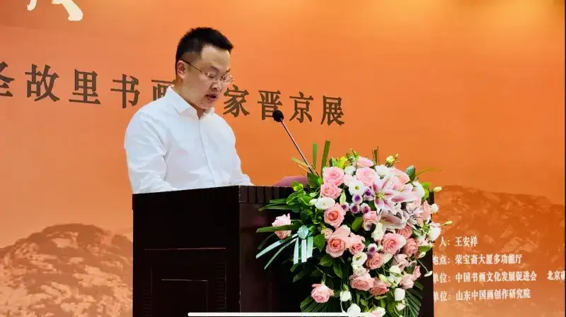
The exhibition is based on the goals of "carrying forward fine traditional culture and enriching quality art and literature." Its theme is "Ink Grace." It brings together 89 works by 28 famous calligraphers and painters. It is another group showing of works by Linyi-born calligraphers and painters in Beijing. It is also a focused report on the rich results and artistic goals of the many art and calligraphy workers who have taken root in the Yimeng region and drawn nourishment from real life.
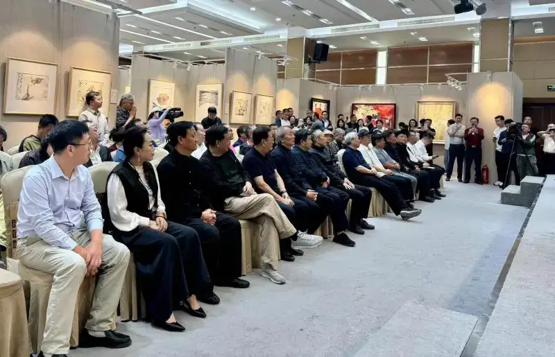
The works have clear themes, rich content, and varied forms. Within the brushwork flows a strong, broad, and heavy spirit. In the dots and texture strokes, a fresh, elegant, and light feeling shines through. The works show the deep understanding the artists have of calligraphy and painting. They show the beauty of the landscape, the human spirit, and the development of "Red Yimeng, Stylish Linyi." Through the special form of calligraphy and painting, they vividly explain and carry forward the Chinese Dream. They raise the flag of core socialist values and pass on the Yimeng spirit.
Curator: Wang Anxiang
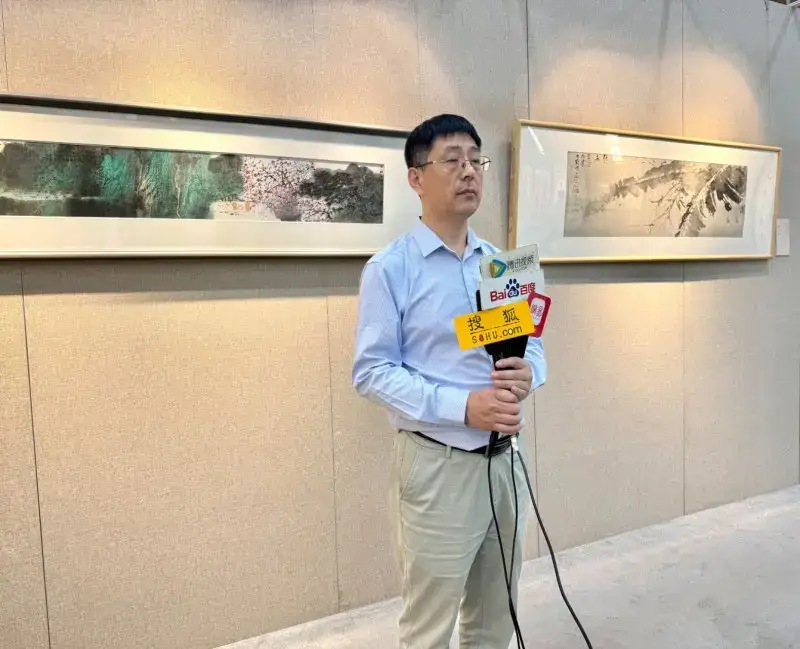
Participating artists:
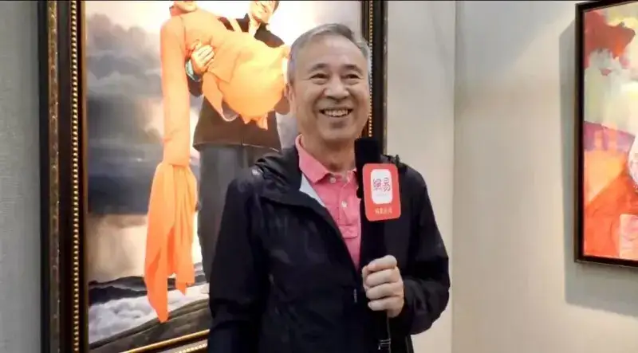
Invited artists: Liu Wanming, Lu Yushun, Tian Liming, Zhang Bing
Participating calligraphers: Zhu Shaoyang, Bu Qingzhong, Lv Jinguang, Zhang Chuanxu
Participating traditional painters: Li Xiang, Jiang Wenzhan, Zhao Qingyuan, Fang Xinquan, Mu Zengli, Liu Yuying, Li Ran
Hu Shi, Lu Shan, Gao Jixing, Zhang Likui, Li Guirong, Bao Hongbo, Yao Xiuming, Dong Jingcheng
Wang Yougang
Participating oil painters: Wang Yidong, Jiang Qi, Wang Yiguang, Chen Guoxia
Main leaders and guests:
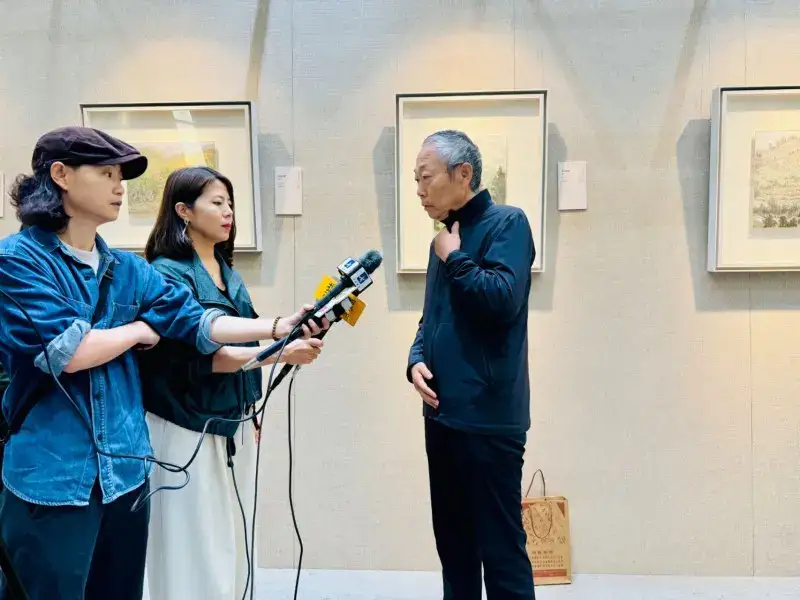
Sun Qingju, deputy director of the Culture, History and Study Committee of the 13th National Committee of the Chinese People's Political Consultative Conference, and former vice president of the Central Party School
Liu Hongjun, former deputy commander of the Armed Police Force, lieutenant general, and president of the Beijing Inkstone Culture Development Research Society
Shen Yongshe, research fellow at the Beijing Institute of Electronic Science and Technology, and former party secretary
Kong Lingyi, former director of the Military Museum of the Chinese People's Liberation Army
Sun Linping, former deputy editor-in-chief of the PLA Daily
Shi Chang'en, former vice chairman of the Central Government Agencies Calligraphers Association
Feng Zengtian, member of the China Writers Association and chief expert of the Shandong Yimeng Culture Research Society.
Guo Yugang, vice president of the Linyi Charity Federation
Zhu Kongxian, deputy director of the Publicity Department of the Linyi Municipal Party Committee
Wang Li, president of the Collection Professional Committee of the China Calligraphy and Painting Culture Development Association, and others attended the opening ceremony.
Exhibition scene
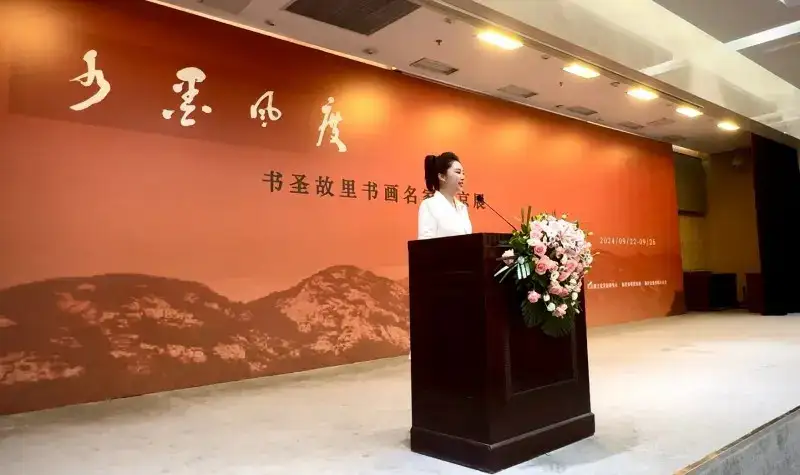
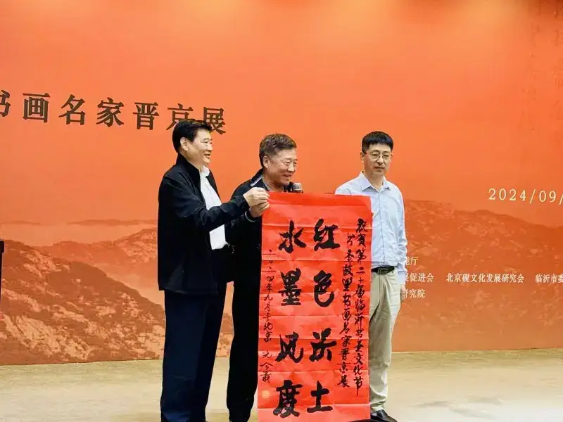
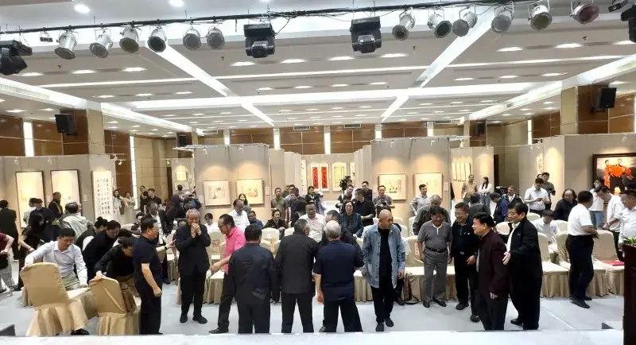
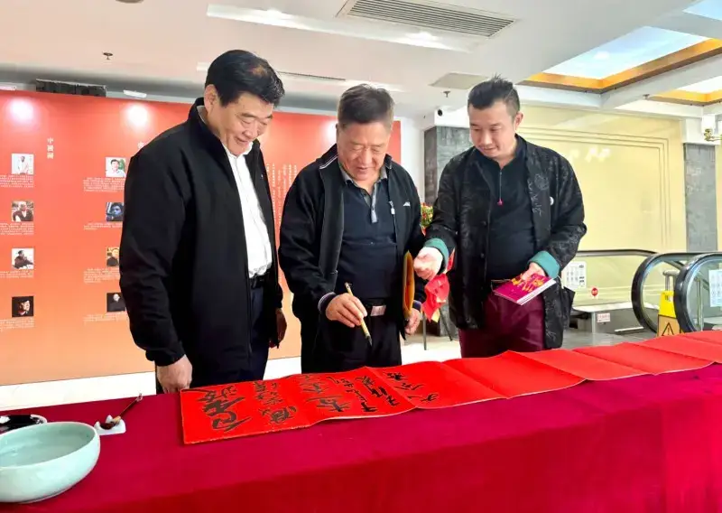
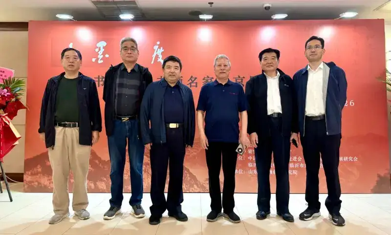
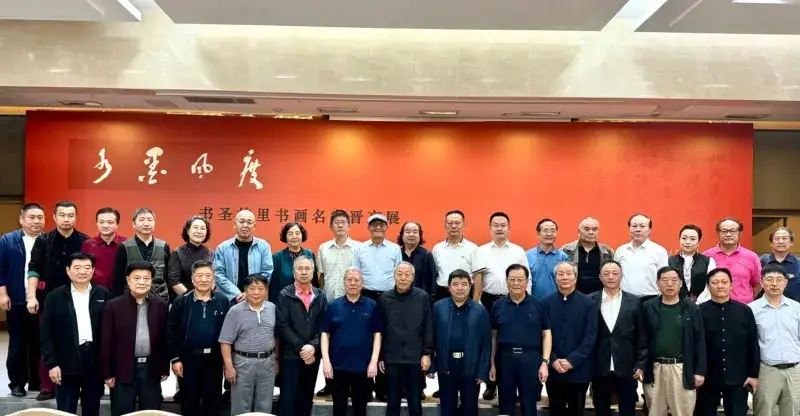